Slides do painel: Transferegov.br e as OSCs: Desafios, Exigências e Estratégias para Acesso a Recursos
Slides disponíveis só para acompanhar a apresentação. O texto de cada slide está em "Texto do slide", logo abaixo da imagem. Use os botões ou as setas do teclado para avançar e voltar.
-
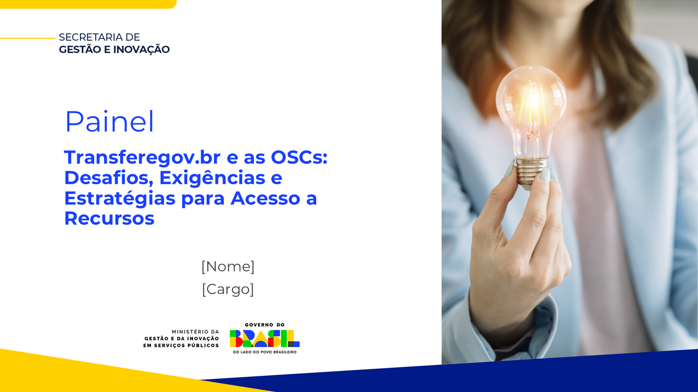
Slide 1 de 13 Texto do slide 1
Painel
Transferegov.br e as OSCs: Desafios, Exigências e Estratégias para Acesso a Recursos
-
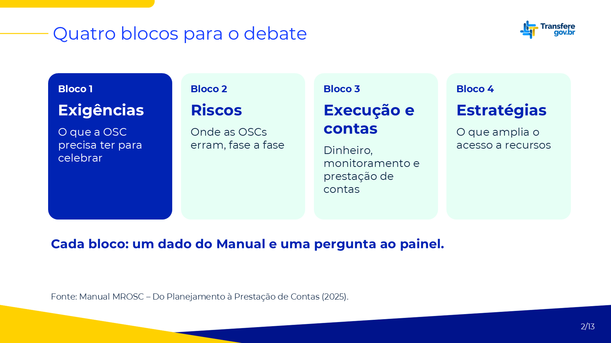
Slide 2 de 13 Texto do slide 2
Quatro blocos para o debate
Fonte: Manual MROSC – Do Planejamento à Prestação de Contas (2025).
Bloco 1
Exigências
O que a OSC precisa ter para celebrarBloco 2
Riscos
Onde as OSCs erram, fase a faseBloco 3
Execução e contas
Dinheiro, monitoramento e prestação de contasBloco 4
Estratégias
O que amplia o acesso a recursosCada bloco: um dado do Manual e uma pergunta ao painel.
-
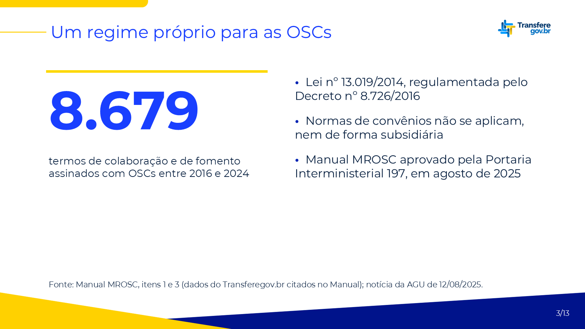
Slide 3 de 13 Texto do slide 3
Um regime próprio para as OSCs
Fonte: Manual MROSC, itens 1 e 3 (dados do Transferegov.br citados no Manual); notícia da AGU de 12/08/2025.
8.679
termos de colaboração e de fomento assinados com OSCs entre 2016 e 2024
• Lei nº 13.019/2014, regulamentada pelo Decreto nº 8.726/2016
• Normas de convênios não se aplicam, nem de forma subsidiária
• Manual MROSC aprovado pela Portaria Interministerial 197, em agosto de 2025 -
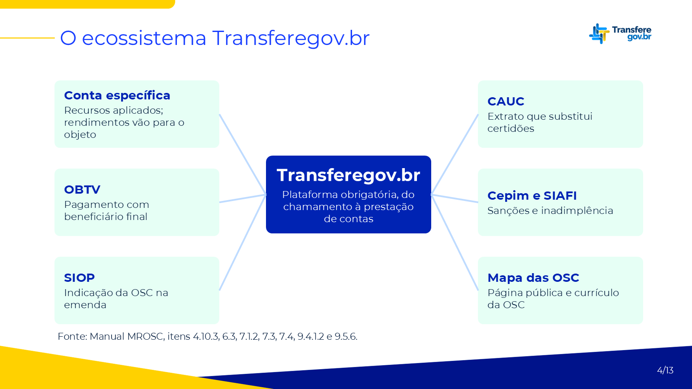
Slide 4 de 13 Texto do slide 4
O ecossistema Transferegov.br
Fonte: Manual MROSC, itens 4.10.3, 6.3, 7.1.2, 7.3, 7.4, 9.4.1.2 e 9.5.6.
Transferegov.br
Plataforma obrigatória, do chamamento à prestação de contasConta específica
Recursos aplicados; rendimentos vão para o objetoOBTV
Pagamento com beneficiário finalSIOP
Indicação da OSC na emendaCAUC
Extrato que substitui certidõesCepim e SIAFI
Sanções e inadimplênciaMapa das OSC
Página pública e currículo da OSC -
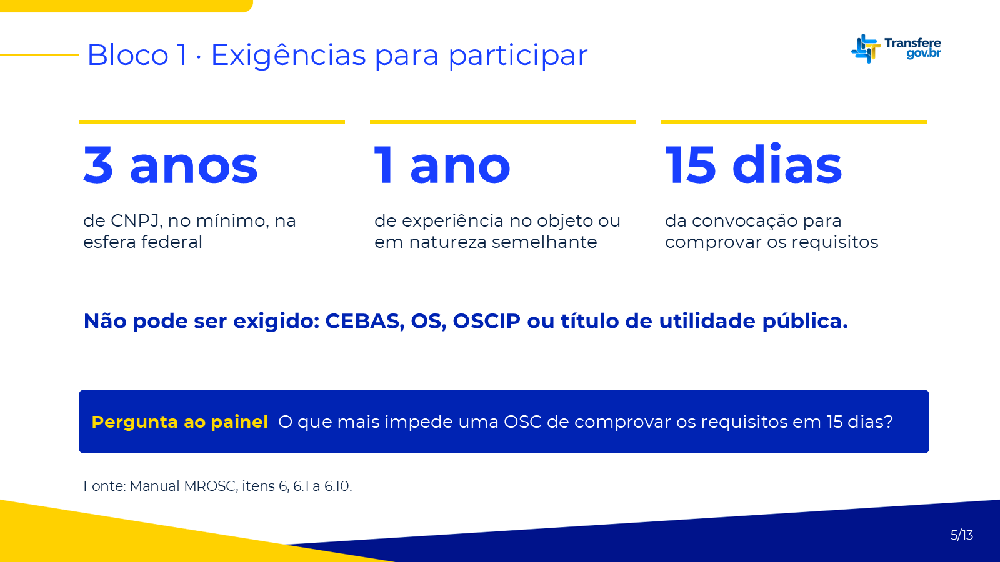
Slide 5 de 13 Texto do slide 5
Bloco 1 · Exigências para participar
Fonte: Manual MROSC, itens 6, 6.1 a 6.10.
3 anos
de CNPJ, no mínimo, na esfera federal
1 ano
de experiência no objeto ou em natureza semelhante
15 dias
da convocação para comprovar os requisitos
Não pode ser exigido: CEBAS, OS, OSCIP ou título de utilidade pública.
Pergunta ao painel O que mais impede uma OSC de comprovar os requisitos em 15 dias?
-
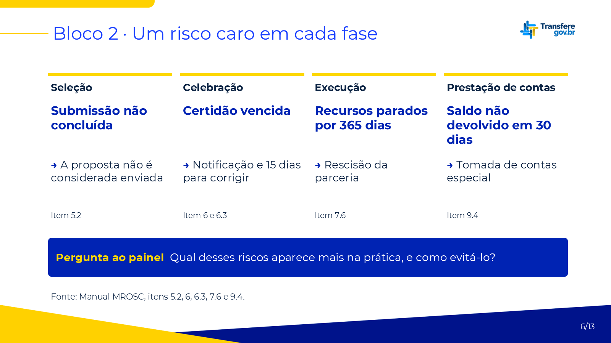
Slide 6 de 13 Texto do slide 6
Bloco 2 · Um risco caro em cada fase
Fonte: Manual MROSC, itens 5.2, 6, 6.3, 7.6 e 9.4.
Seleção
Submissão não concluída
→ A proposta não é considerada enviada
Item 5.2
Celebração
Certidão vencida
→ Notificação e 15 dias para corrigir
Item 6 e 6.3
Execução
Recursos parados por 365 dias
→ Rescisão da parceria
Item 7.6
Prestação de contas
Saldo não devolvido em 30 dias
→ Tomada de contas especial
Item 9.4
Pergunta ao painel Qual desses riscos aparece mais na prática, e como evitá-lo?
-
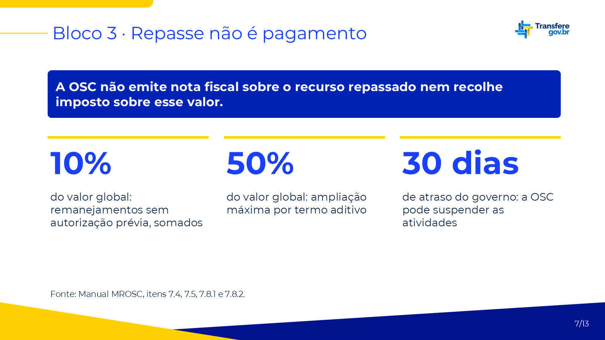
Slide 7 de 13 Texto do slide 7
Bloco 3 · Repasse não é pagamento
Fonte: Manual MROSC, itens 7.4, 7.5, 7.8.1 e 7.8.2.
A OSC não emite nota fiscal sobre o recurso repassado nem recolhe imposto sobre esse valor.
10%
do valor global: remanejamentos sem autorização prévia, somados
50%
do valor global: ampliação máxima por termo aditivo
30 dias
de atraso do governo: a OSC pode suspender as atividades
-
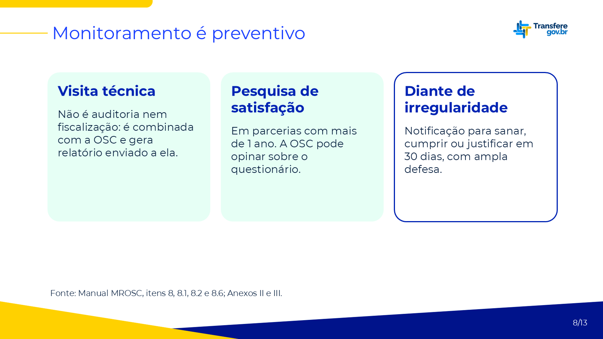
Slide 8 de 13 Texto do slide 8
Monitoramento é preventivo
Fonte: Manual MROSC, itens 8, 8.1, 8.2 e 8.6; Anexos II e III.
Visita técnica
Não é auditoria nem fiscalização: é combinada com a OSC e gera relatório enviado a ela.Pesquisa de satisfação
Em parcerias com mais de 1 ano. A OSC pode opinar sobre o questionário.Diante de irregularidade
Notificação para sanar, cumprir ou justificar em 30 dias, com ampla defesa. -
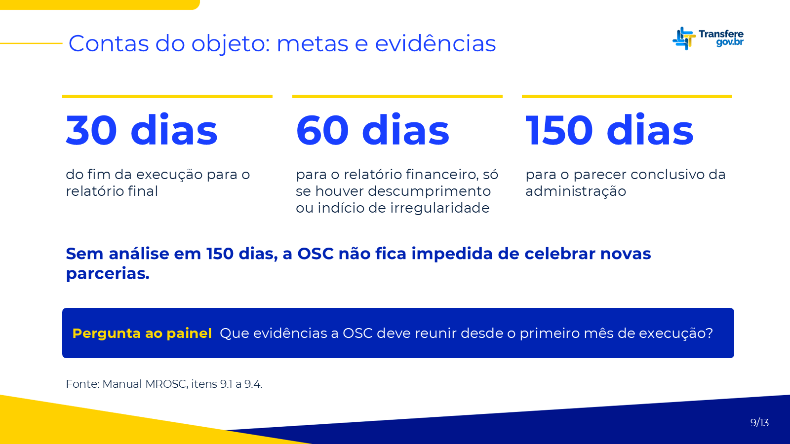
Slide 9 de 13 Texto do slide 9
Contas do objeto: metas e evidências
Fonte: Manual MROSC, itens 9.1 a 9.4.
30 dias
do fim da execução para o relatório final
60 dias
para o relatório financeiro, só se houver descumprimento ou indício de irregularidade
150 dias
para o parecer conclusivo da administração
Sem análise em 150 dias, a OSC não fica impedida de celebrar novas parcerias.
Pergunta ao painel Que evidências a OSC deve reunir desde o primeiro mês de execução?
-
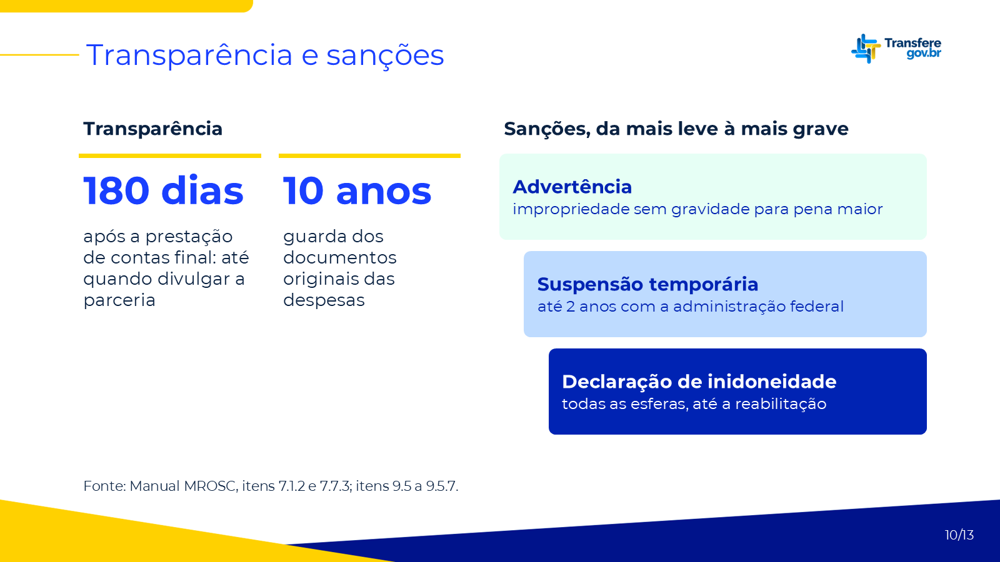
Slide 10 de 13 Texto do slide 10
Transparência e sanções
Fonte: Manual MROSC, itens 7.1.2 e 7.7.3; itens 9.5 a 9.5.7.
Transparência
180 dias
após a prestação de contas final: até quando divulgar a parceria
10 anos
guarda dos documentos originais das despesas
Sanções, da mais leve à mais grave
Advertência
impropriedade sem gravidade para pena maiorSuspensão temporária
até 2 anos com a administração federalDeclaração de inidoneidade
todas as esferas, até a reabilitação -
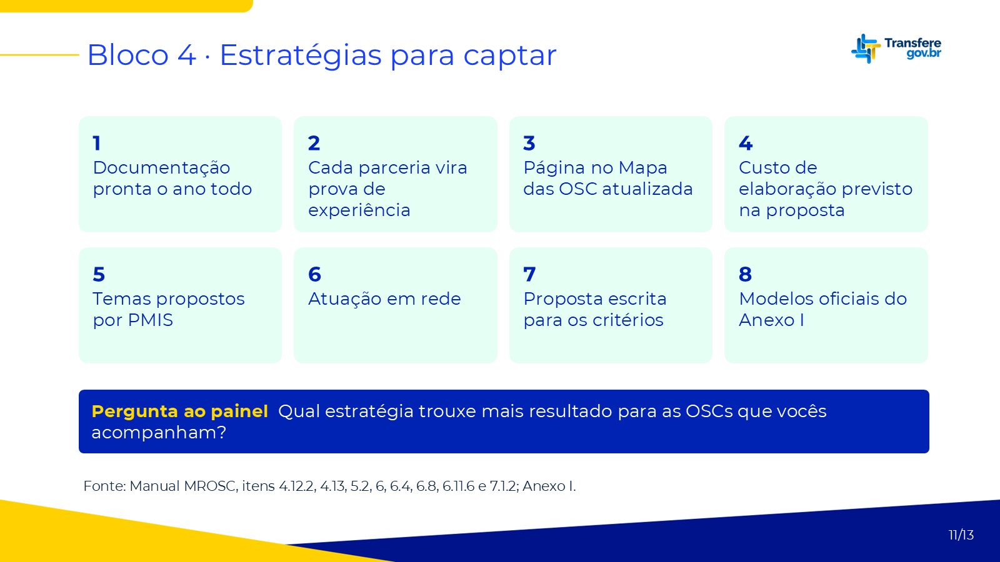
Slide 11 de 13 Texto do slide 11
Bloco 4 · Estratégias para captar
Fonte: Manual MROSC, itens 4.12.2, 4.13, 5.2, 6, 6.4, 6.8, 6.11.6 e 7.1.2; Anexo I.
1
Documentação pronta o ano todo2
Cada parceria vira prova de experiência3
Página no Mapa das OSC atualizada4
Custo de elaboração previsto na proposta5
Temas propostos por PMIS6
Atuação em rede7
Proposta escrita para os critérios8
Modelos oficiais do Anexo IPergunta ao painel Qual estratégia trouxe mais resultado para as OSCs que vocês acompanham?
-
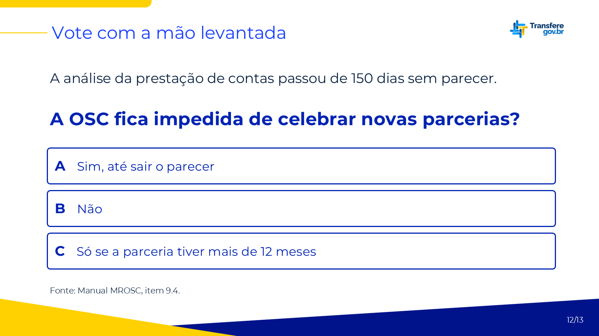
Slide 12 de 13 Texto do slide 12
Vote com a mão levantada
Fonte: Manual MROSC, item 9.4.
A análise da prestação de contas passou de 150 dias sem parecer.
A OSC fica impedida de celebrar novas parcerias?
A Sim, até sair o parecer
B Não
C Só se a parceria tiver mais de 12 meses
-
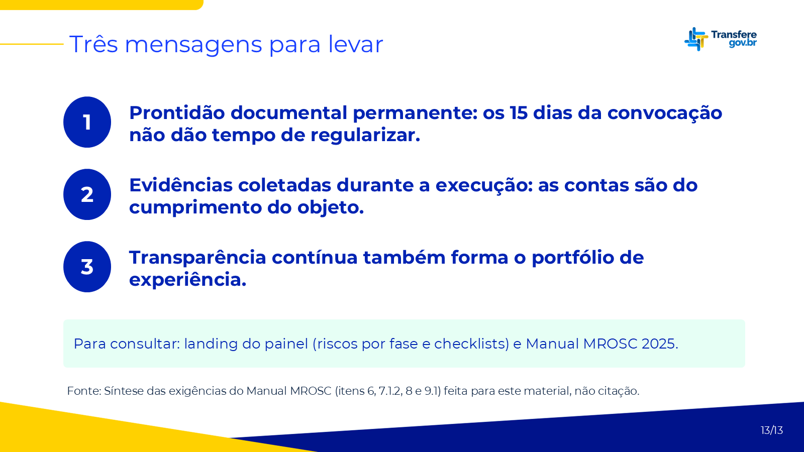
Slide 13 de 13 Texto do slide 13
Três mensagens para levar
Fonte: Síntese das exigências do Manual MROSC (itens 6, 7.1.2, 8 e 9.1) feita para este material, não citação.
1
Prontidão documental permanente: os 15 dias da convocação não dão tempo de regularizar.
2
Evidências coletadas durante a execução: as contas são do cumprimento do objeto.
3
Transparência contínua também forma o portfólio de experiência.
Para consultar: landing do painel (riscos por fase e checklists) e Manual MROSC 2025.